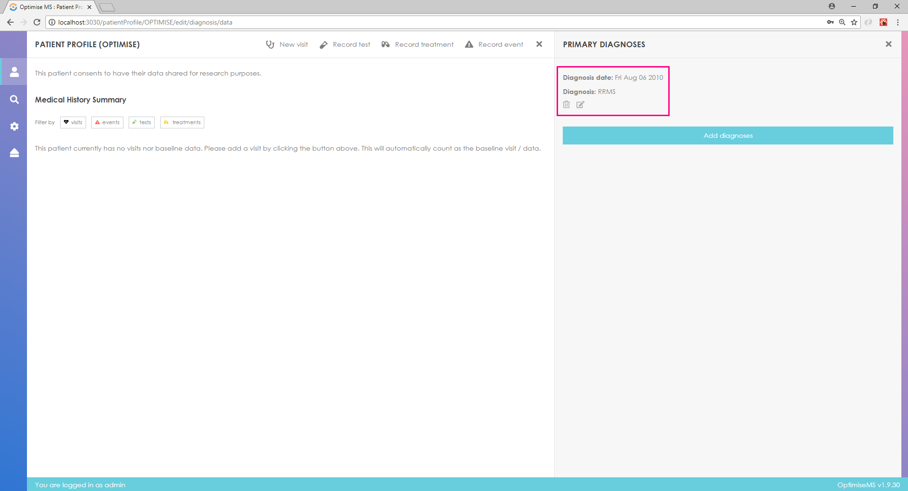
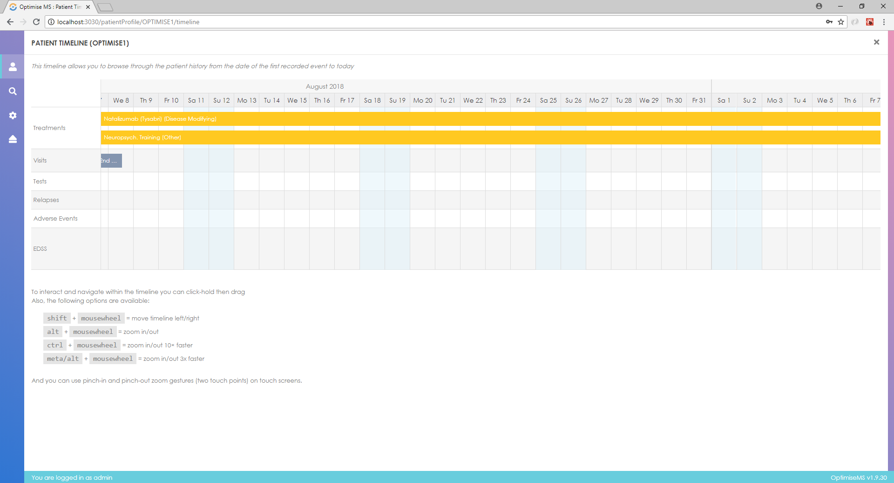
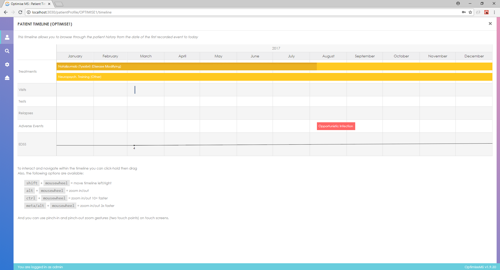

Welcome to the
OPTIMISE Portal
A site for access to open-access tools for collection of
real-world Multiple Sclerosis patient data
A site for access to open-access tools for collection of
real-world Multiple Sclerosis patient data
Real-world clinical data is needed to understand the course of disease, assess clinical effectiveness of medicines and to remain alert to unexpected serious adverse events or frequencies of adverse events (Mult Scler 23 (2017)362). The OPTIMISE Project Team, which has involved neurologists from several UK centres, was created to address this need for multiple sclerosis (MS) care.
A core objective of the OPTIMISE Team has been to encourage MS neurologists to comprehensively record standardised data on their patients and to share this in anonymised fashion with other clinicians and researchers to improve patient care and health outcomes.
The Team recognises that software tools for MS patient data entry and curation have been generated before and already are being used by some MS centres. However, some of these have been developed by single centres only and others may have a more complex range of data fields than is needed for usual practice. Neither are in wide-enough use.
The OPTIMISE Team therefore worked with a core group of MS neurologists and solicited views of patients, industry and regulators regarding the kinds of data that are needed to make clinical decisions, to meet needs for prospective pharmacovigilance and that are practical to acquire. The Team explored ways of making them easier to record. With this input, an open-access software tool was developed to facilitate the capture of prospective longitudinal, standardized clinical data in MS. This tool can be downloaded here for use by clinicians for MS care research.
The tool will generate .csv output files. Users are encouraged to share anonymized data with larger registry efforts, such as MSBase (https://www.msbase.org/) or the UK MS Register (for UK based clinicians, https://www.ukmsregister.org/Portal/Home).
Additional updates to the tool will be provided periodically. The OPTIMISE Team also is working to develop joint research projects to encourage real world data collection in MS care. Users are encouraged to register through this website to receive updates on the tool or news about about studies using OPTIMISE or enhancements for data sharing. Feedback regarding to software is welcome: please send comments by email to ******.
OPTIMISE is accessible throught this website in two forms: direct access to our demo servers and packaged containers.
To access our demo server, simply head here.
If you are an IT professional and would rather deploy the application on premise you can get this done in four simple steps.
18.x.y-ce.1.8.x.cd> into it.curl -s https://optimise-ms.org/install | bash :After successfully executing the installation command the application will be available on port 8080. This can be changed by directly editing the docker-compose.yml file present in the installation directory.
At any point it is possible to upgrade to the latest version of Optimise by simply going to the same folder you created in step 1 and run the installation command of step 4 again.
OPTIMISE MS is a system for recording data including demographics, clinical events, treatments and tests according to CDISC standards for Multiple Sclerosis. OPTIMISE MS allows researchers to better monitor MS patients’ progress, record outcomes and evaluate treatments.
The patient data entry is grouped as demographics, medical history and family medical history, clinical events (prior or interim clinical events), visits (happening in the present), tests and patient reported outcome measures and treatments. The user can also maintain a list of future/pending patient tests.
OPTIMISE MS can be used in two modes; the off-site mode when networking is enabled and the on-premise mode when networking is disabled.
To start using the OPTIMISE portal first open your favorite modern browser.
Then, enter the hosting address in the address bar.
If you are using our Docker image, this might be http://localhost:8080/.
You should see the following screen. Enter the user name and password that were given to you and click the Log in button. The default username is admin and the password is letmein.

If the log-in is successful, you should see the following screen.

If the log-in is unsuccessful, you will get a message. Click OK and re-enter user credentials.
In order to search for patients by ID or a CDISC field and export the search results, click on the Search patients button.

Specify the filter in the pop-up window or click on one of the listed patient identifiers to access the patient entry.

Select Unique subject identifier from the list to search for a particular patient by ID.

Enter the identifier string in the input box as shown below.

In a similar way, you can filter the database by any of the CDISC fields in the list and get the search results listed by patient identifier.

To create a new patient click on the second button as shown below.

Enter a number in the ID input box- an OPTIMISE ID for the new patient is automatically created. Click OK to continue.

If the ID entered already exists in the database, you will get a message on screen. Click OK to enter a different ID.

In order to view all the reminders for all the patients, click on

You will see all the reminders in a pop-up window.

To export the database click on Full dataset export.

To enter patient profile data, click on the PROFILE tab.

Click on Demographic to enter any demographic data for the patient.

Please note that any data entered using drop down lists, once entered cannot be changed to unknown or unspecified unless the patient entry is deleted and re-created.
In order to enter medical history data, click on the blue title bar Medical History right below the Demographic section.

Enter Pregnancy details, if applicable. This is only available if gender in the Demographic section (p. 10) is set to Female. Click Add to add the details to Medical History.

Enter Immunisations, if applicable. This is available only for patients of age less than 18 years. Click Add to add information to Medical History.

Enter Medical Condition term and details (year of diagnosis, outcome and year of resolution), if applicable. Click Add to add condition details to Medical History.

You can remove any medical history data by clicking on Delete next to each entry.
In order to enter medical history data for family and associated persons, click on Family Medical History.

Select relationship of associated person with MS or Other Medical Conditions from the drop down list and enter details in the text box on the right. Click Add to add information to Family Medical History.

You can remove Family Medical History data entries by clicking on Delete next to each entry.
In order to enter Primary Diagnosis data, click on Primary Diagnosis as shown below.
Enter First Symptoms details and click Save. Select Diagnosis from the 5 available options, enter further details and click Save to add.

For MS or NMOSD diagnoses, further subtype options become available. After saving the Diagnosis details, you can select the basis of MS diagnosis and methods of detection as shown below.

To remove a Primary Diagnosis entry, click on Delete next to that particular entry.
In order to enter or edit patient visit data, click on VISITS as shown below.

Click NEW and pick a date to create a new visit entry or select a visit from the list on the left to edit the entered data for that particular visit.

You can remove a visit by clicking on Delete next to it.
In order to enter questionnaire and other test scores, click on Performance Measures. There are detailed score entry options for EDSS and EDMUS. Click on EDSS Tool and EDMUS Tool to access these.

A detailed EDSS breakdown is available as shown below. Click Save to save the entered scores.

For EDMUS choose one of the available scores and click Save.

Click Communications to get a summary report for the selected visit. Use the buttons to display or hide information.

To enter clinical event data, click on CLINICAL EVENTS.

Click NEW and choose date of clinical event to enter a new relapse. Select a relapse from the list on the left panel to edit the data for that particular entry. Click on Functional Systems Affected. Then select affected functional systems by clicking on the available buttons. Click a button again to unselect if you clicked it by mistake. Enter details such as severity and steroids use.

Enter symptoms and signs.

Click on TESTS. Then click on one of the available types of tests.

After selecting one of the 4 available types of test, click NEW and select the date of test to create a new test entry or choose one of the listed entries to edit.

You can remove a test entry by clicking Delete in the left panel.Manual record of MRI results is available in this version- this can be found in the Morphology panel under TESTS > Magnetic Resonance Imaging.
Some test results can be searched using the text boxes below Count and sorted using the small arrows.

In order to enter patient treatment data, click on TREATMENTS.

Click NEW on the left and select treatment start date to create a new exposure entry. Choose category of treatment by clicking on one of the buttons. Enter treatment name and treatment details. You may click on one of the treatment names in the list that is shown when you start typing. Enter any drug interruptions or drug discontinuation details and click add to record (or delete to remove existing entries).
Select Exposure from the list of existing patient treatments in the left panel to edit or delete entry.

In order to view the current patient entry, click on TIMELINE
Click and hold the mouse button to select the time period to display (bottom of the timeline). Select what information to view using the list of options in the left panel. Relapse circles’ size depicts the severity of the relapse with larger circles representing more severe events.
In order to enter the reminder system for blood tests, serological tests and MRI scans, click on the REMINDERS tab

Select reminder type using the available buttons, enter additional notes if required, click on the appropriate frequency button and click On to add the reminder. Click Off to turn a particular reminder off or Delete to remove it completely.

As we are currently in preview; the source code is not yet available. Keep watching for some update soon
OPTIMISE is finally starting its journey to help you collect data for MS patients.
Creation of the OPTIMISE Database tool was sponsored by Imperial College London and generously funded by Biogen. This project also has been supported by the Imperial College NIHR Biomedical Research Centre Brain Sciences Theme. The core OPTIMISE Team exercising oversight over the software development project included Ruth Dobson (St George’s Hospital), Matt Craner (University of Oxford & Frimley Health Foundation Trust), James Overell (University of Glasgow), Gavin Giovannoni (Barts and The London Hospitals), Cheryl Hemingway (Great Ormond Street Hospital), Yi-ke Guo (Imperial College Data Science Institute) and Paul Matthews (Imperial College London NIHR Biomedical Research Centre and Division of Brain Sciences, Department of Medicine). Developers on the project included May Young, Fengde Liu and Eleni Pissaridou (Imperial College Data Science Institute). All of the team have benefited from the input of many clinicians and patients with MS.
The software for download is open-access and provided “as is” for research use. It is strongly recommended that users familiarise themselves with local and applicable national data protection requirements (e.g., for UK and European users, see https://www.eugdpr.org).
Please note that OPTIMISE v0.2.0 is currently released as a preview software. There is no guarantee the software will behave in the intended ways. Come back here anytime for updates.
OPTIMISE is built to work best in the latest desktop and mobile browsers, meaning older browsers might display differently certain components or not render a functional application at all.
Specifically, we support the latest versions of the below metioned browsers and platforms.
Alternative browsers which use the latest version of WebKit, Blink, or Gecko, whether directly or via the platform's web view API, are not explicitly supported. However, OPTIMISE should (in most cases) display and function correctly in these browsers as well. More specific support information is provided below.
Similarly, the latest versions of most desktop browsers are supported.
| Chrome | Edge | Firefox | |
|---|---|---|---|
| Mac | Supported | N/A | Supported |
| Windows | Supported | Supported | Supported |
For Firefox, in addition to the latest normal stable release, we also support the latest Extended Support Release (ESR) version of Firefox.
Unofficially, OPTIMISE should look and behave well enough in Chromium and Chrome for Linux, Firefox for Linux, and Internet Explorer 11, as well as Microsoft Edge, though they are not officially supported.
There is currently limited to no support for mobile devices.
OPTIMISE is released under the MIT license and is copyright 2017 Imperial College London. Boiled down to smaller chunks, it can be described with the following conditions.
The full OPTIMISE license is located in the project repository for more information.